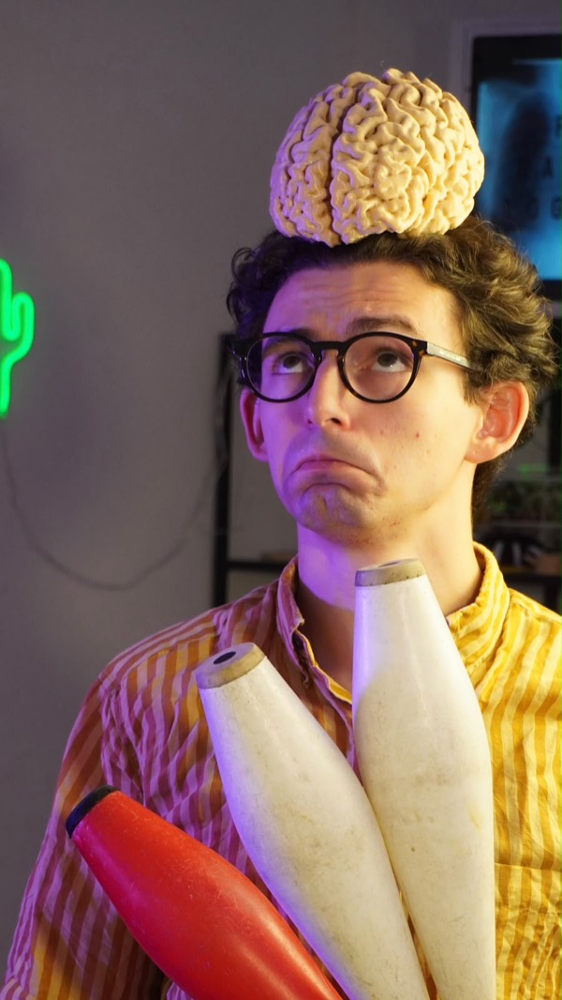

Ciao, sono Francesco!

Da Medico Radiologo (ehm... NEURORADIOLOGO) a divulgatore: con FFRadiologica trasformo il mondo della medicina e immagini mediche in qualcosa che si può capire, guardare e vivere di persona con l'intento di semplificare i concetti difficili, incuriosire senza mai (spero) banalizzare.
FFRadiologica nasce dall’incontro tra due mondi che fanno parte di me da sempre: la medicina e lo spettacolo.
Prima ancora di diventare medico, infatti, sono stato un giocoliere. Ho sempre amato il teatro, il contatto con il pubblico e la possibilità di raccontare qualcosa attraverso immagini, movimento, ironia e sorpresa. Quando ho iniziato a studiare Medicina e, successivamente, mi sono avvicinato alla radiologia e alla neuroradiologia, ho capito che anche questo mondo poteva essere raccontato in modo diverso: più semplice, curioso e coinvolgente.
La radiologia mi appassiona perché permette di osservare ciò che normalmente non possiamo vedere. Attraverso radiografie, TC, risonanze magnetiche ed ecografie possiamo entrare nel corpo umano, comprenderne il funzionamento e scoprire le storie nascoste dietro ogni immagine.
Con FFRadiologica cerco di rendere tutto questo accessibile anche a chi non lavora in ambito sanitario. Mi piace spiegare come funzionano gli esami diagnostici, sfatare falsi miti, raccontare curiosità sul corpo umano e mostrare quanto la medicina possa essere affascinante senza necessariamente essere difficile o distante.
Un ruolo importante in questo percorso è quello dei fumetti. Attraverso personaggi, vignette e piccole storie provo a trasformare concetti medici complessi in immagini immediate, comprensibili e facili da ricordare. Il fumetto mi permette di unire precisione scientifica, ironia e narrazione, rendendo la radiologia più vicina anche a chi normalmente la percepisce come tecnica o difficile.
Negli anni ho sentito sempre più l’esigenza di portare la divulgazione anche fuori dai social, con il desiderio di incontrare le persone dal vivo e trasformare la scienza in un’esperienza condivisa. Sono nati così incontri, eventi e spettacoli in cui medicina, teatro e giocoleria si intrecciano.
Sul palco utilizzo il linguaggio dello spettacolo per parlare di scienza: oggetti, gag, immagini, fumetti e racconti diventano strumenti per avvicinare il pubblico a temi complessi in modo leggero, coinvolgente e sempre scientificamente accurato.
È proprio questo incontro tra rigore medico e creatività a rendere speciale FFRadiologica: la convinzione che si possa imparare divertendosi e che anche una radiografia, una risonanza magnetica, un fumetto o un’immagine del cervello possano diventare il punto di partenza per una storia capace di stupire.
Se vuoi collaborare, invitarmi a scuola o a un evento, scrivimi — sarò felice di conoscerti.